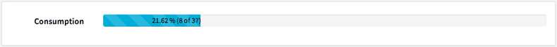
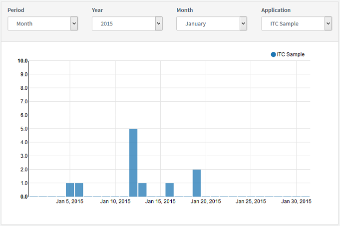
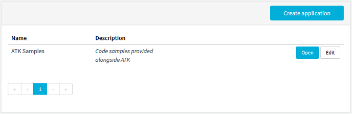
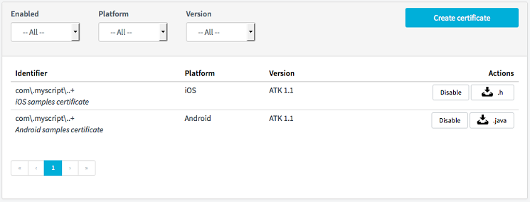

The Admin User Interface is available here: https://atk.myscript.com
The top menu contains 4 sections, described below.
The Profile tab displays the following information: account email, creation date and expiration date.
The Applications tab displays:



Once you click Open to open an application, you access a page dedicated to the corresponding certificate(s).
This new page displays:

Once created, the certificate identifier cannot be changed. The Edit button only allows you to add or update a description.
The Disable button allows you to temporarily suspend a certificate and thus the related application. Click Enable to re-activate the certificate.
The Purchase History tab lists the cartridges purchased on the Developer Portal with the following information: cartridge size (i.e. number of purchased runtimes), transaction date and identifier.
The Console tab displays various 30-day-old error logs from the server.